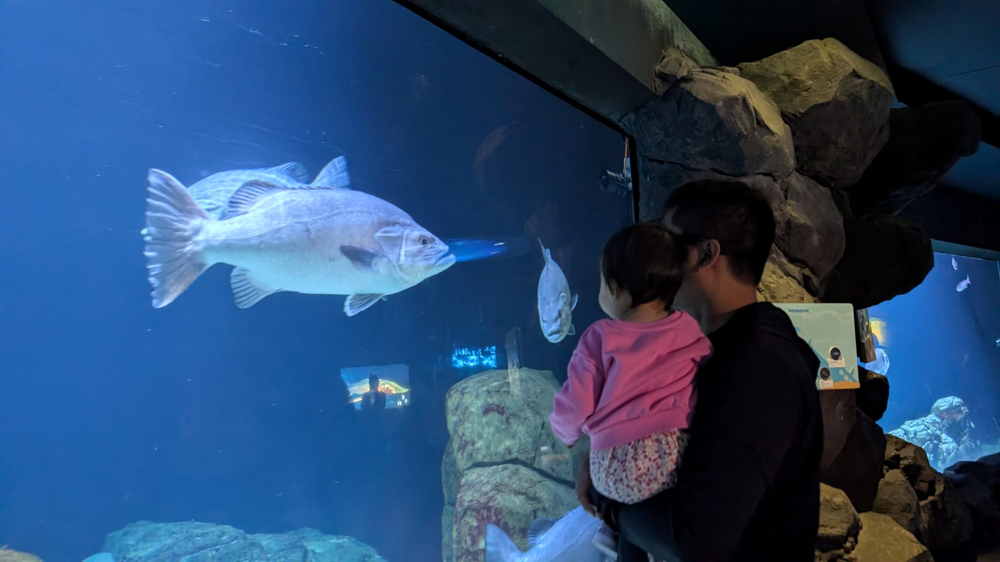

Returning to work as a mother who just finished parental leave makes me nervous. There's a persistent sense of not being enough, a voice that keeps asking: "Do they really want me here, or are they just obliged to take me back?"
In Germany, employers can't fire you while you're on parental leave, and the law gives you protection for a period after you return too. But legal protection and feeling secure are two different things. I've seen it happen to women I know: they come back after a year and find their team has been restructured out from under them. Some were offered a mutual termination agreement on their first day back. It's more common than people talk about, and even when you have the law on your side, the stress of fighting it takes a toll you can't fully prepare for.
After everything we go through, literally giving birth and stepping away from our careers to keep a small human alive, it's a reasonable thing to want: a place to come back to.
I am one of the lucky mothers who still get a place to return to. Just barely lucky. And I want to tell you my experience of returning back to work after a year off from my career. I wasn't following the AI train, I wasn't following the tech news, I didn't do anything else other than keeping a baby human alive. So I hope this writing can make other moms less nervous about returning to work or can learn something from my experience.
The fear is real — and so is the welcome
Before my first day back, I almost quit. I told myself that life at home in the past 1 year wasn't so bad — I could play with my baby all day, stay home, not stress about work. But then I had to be honest with myself: was this actually the life I wanted, or was I just afraid of finding out how much I'd been left behind?
So I made a deal with myself before day one. Take it slow. Don't be too hard on yourself. Everyone has a learning curve. I even hyped myself up a little: "You've been here for four years. These are people who you know and they know you. You've shipped projects before and you'll do it again." LOL.
I didn't announce my return in Slack. Only my managers knew. But when people saw the green dot light up next to my name, they reached out anyway. They said they were glad to have me back.
That meant more than I expected. I had convinced myself nobody would really notice, that I'd slip back in quietly and prove myself from scratch. Instead I got warmth.
I also gave myself permission to ask the most basic questions. "Can you explain the team structure again?" Because I had the best excuse in the world: I hadn't been here in a year. I set expectations with my managers early. I needed a soft landing for the first four weeks, a new laptop, and some flexibility while my daughter was still in the settling-in phase at daycare.
They accepted all of it.
Your colleagues care about you more than you think. And they want you to succeed.
You're less rusty than you think
Week two was mostly logistics. New laptop, setting up VS Code, GitHub, dbt, password management, requesting access back to platforms that had deactivated my account due to inactivity. Unglamorous but necessary.
The good thing about returning to a familiar place is that the context is still there. I didn't need anyone to explain internal terminology or how things were structured. My catch-up conversations were mostly "yep, yep, got it" and then I went and did the thing. And I finished it.
Turns out muscle memory is real, even in analytics work.

The AI train is easier to board than you think
By week three I was done relearning the old tools. So I picked up the new ones.
I installed Cursor, learned briefly about MCP, and started figuring out how to actually use AI in my daily work. Not in a theoretical way, but practically. My first instinct was skepticism: can you really do that? Most of the time, the answer was yes.
Week four is where it clicked. I asked Cursor to scan our team's GitHub repo, about 700 data models, and list every metric related to a specific product with all the surrounding context. It took three minutes. The same task done manually would have been a full day.
I've been using it to summarize documentation, prepare meeting questions, and brainstorm project timelines. Once you connect it to your other tools like Miro, Atlassian, and your codebase, it starts to feel less like a tool and more like a very fast, very patient collaborator.
It took me about three days to feel comfortable with it. That's it.
The irony: AI makes analytics engineers more valuable, not less
During my leave, I read a lot of takes about AI replacing engineers. Leadership teams wondering whether they still needed us. And I'll be honest, that added to the anxiety of coming back.
But here's what I've actually found: the more I use AI, the more I understand that what it needs to work well is us. It needs someone who understands the data, can design the models, build the semantic layer, add the business context. All the things that make it possible for a language model to actually answer a question correctly.
The work I'm focused on now is designing data architecture that lets AI understand our data well enough to answer business questions in plain English. That work is deeply technical. It requires data modeling intuition, a clear sense of how metrics should be defined, and the judgment to know when an AI-generated answer is simply wrong.
Which is a little ironic, and also a relief.
We're not being replaced. We're being given better tools. And after a year away from the industry, that's the most reassuring thing I've learned.